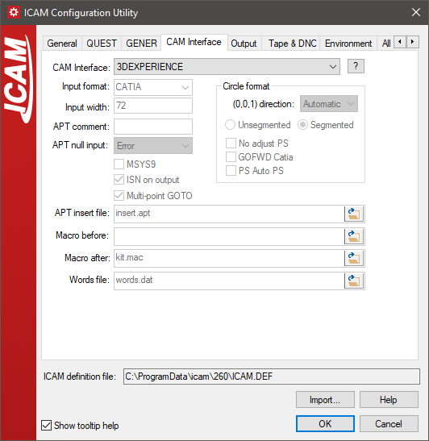
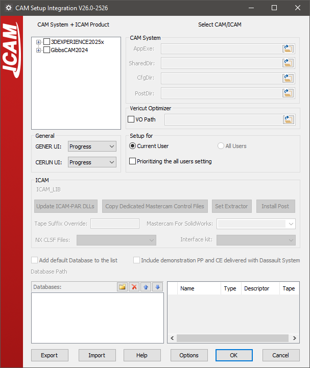
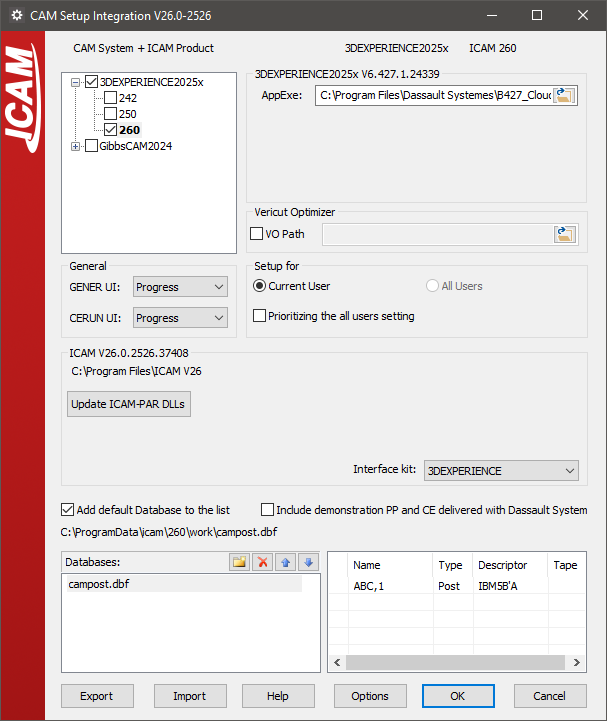

CAD/CAM System Interfaces
This annex provides information about how Icam Post and Virtual Machine interface with the CAM system.
Icam Post can interface with a wide variety of CAM systems through the use of CAM Interface Kits. The purpose of a CAM interface kit is to adjust configuration settings so that Icam Post can recognize the physical CL file format of the CAM system. Some CAM systems have an inflexible post-processor command syntax. In this case, the interface kit will also include macros that transform these non-conforming post-processor commands to the format that Icam Post requires.
Icam Post can also be directly integrated with some CAM systems through the use of the CAM Integration Setup utility. The purpose of the CAM integration is to provide the NC programmer with the ability, from within the CAM system, to associate an ICAM post-processor to the manufacturing process and to have the CAM system then run Icam Post when post-processing. A second purpose of the CAM integration is to provide the means to “extract” manufacturing data (such as tools, holders, parts and fixtures) from the CAM system to be used with Virtual Machine simulation.
CAM Interface Kits
Icam Post interfaces to different CAM systems through the use of CAM Interface Kits. Each such kit consists of a file named ICAM.DEF and other necessary files (as listed here), all grouped together in a directory named after the CAM system or its vendor. These directories can be found in the “kit” subdirectory below the install point. For example, the Generic interface can be found in the C:\Program Files\ICAM\V26\kit\Generic directory.
The following interfaces were available at the time of publication:
CAM Interface Name
Description
Cadds5
PTC, originally developed by ComputerVision
Cadra
SoftTech CadraNC
Camand
SDRC, originally developed by Camax
CAMWorks
Geometric Ltd.
3DEXPERIENCE
Dassault Systèmes APT-like aptsource
Cimatron
Cimatron Ltd. CimatronE NC
Creo
PTC Pro/Manufacturing, Wildfire
eM_Machine
Tecnomatix
FeatureCAM
Autodesk APT-like aptsource
Fusion 360
Autodesk APT-like aptsource (ICAM APT PP)
Generic
Generic APT-like interface
hyperMILL
OPEN MIND Technologies AG.
ICAM
ICAM CAD-APT and CAM-APT-SURF binary
IDEAS
SDRC MasterSeries
Intercim
Austin NC Intercim APT
Intergraph
Intergraph
Mastercam
CNC Software Inc.
NCCS_NCLCAM
NCCS binary
NX_CLF
Siemens NX binary clf file, formerly Unigraphics
NX_CLS
Siemens NX APT-like cls using NX templates
NX_ICAM
Siemens NX APT-like cls using ICAM template
NICAM
Software Magic NICAM IV APT
Pathtrace
EdgeCAM
PowerMILL
Autodesk binary CLDATA (formerly DelCAM)
SurfCAM
Vero Software (formerly SURFWARE)
TopSolid
Missler Software TopSolid CAM V6
CAM systems not listed in the table above may or may not require an interface kit to operate with Icam Post. Generally speaking, those that generate an APT-like CLDATA are more likely to be supported than those that do not. Icam Post can interface with some binary CLDATA formats, but these are individually licensed options. See here for instructions on creating new interfaces and modifying existing interfaces. New and modified kits should be created in the application data C:\ProgramData\ICAM\260\kit directory.
For compatibility purposes, kit ICAM.DEF files can include a kit_aliases definition that lists one or more semicolon separated names that also can be used to identify that interface kit.
Selecting a CAM Interface
{kind=link}
By default, GENER will attempt to automatically select an
appropriate CAM interface. It does so by using kit… definitions in
the ICAM.DEF file in each interface kit.
The kit_clfile symbol defines a file-match pattern unique to the
specific CAM system. A semicolon can be used to delimit a series of
possible file-match patterns (e.g., “*.ncl;*.ncl.*”).
The kit_cltext symbol defines text (in the form of a regular
expression) that is expected to be found in the first 100 bytes of
the file if the kit can not be uniquely defined by the file-match
pattern.
The kit_aliases definition lists one or more semicolon separated names that also can be
used to identify that interface kit.
If two or more kits are valid candidates, then GENER will prompt for the appropriate kit, or if prompting is not possible, will abort execution with a diagnostic message. QUEST does not have the ability to automatically select an appropriate kit since QUEST does not input CL files. If an interface kit is not selected, QUEST will use the default built-in list of Major and Minor words.
Selecting a CAM interface ensures that both QUEST and GENER are configured to work with the same set of Major/Minor keyword definitions, which is important for macro processing. Use the Configuration utility to select an interface (see “The ICAM Configuration Utility”). This utility can also be run by selecting Tools»Configuration from the QUEST and GENER drop-down menu-bars. Choose the “CAM Interfaces” tab and then select one of the interfaces listed in the “CAM Interface” input field. The [?] button can be pressed to get more information on the selected interface. The CAM interface selection will be defined in the icam_appdata ICAM.DEF file (e.g., C:\ProgramData\ICAM\260\ICAM.DEF) using the interface_kit symbol (see here for a description of this symbol). For example, after selecting the “Generic” interface kit in the configuration utility, the main ICAM.DEF should contain the following definition:
let INTERFACE_KIT = "Generic"
The interface kit setting in the ICAM.DEF file can be overridden when running GENER from the launch panel. Select the CAM button to bring up the “CAM Interface Kit” panel and then choose an appropriate interface from the “CAM System” drop-down list. As with the Configuration utility, a list of standard CAM interfaces will be shown along with a [?] button to obtain more details on the selected one. It is important to note that CAM interface customization made with this dialog are only remembered in the Windows Registry; they do not affect the ICAM.DEF file.
The interface kit setting in the ICAM.DEF file can also be overridden in QUEST and GENER by specifying the /kit command line qualifier when starting the software. For example, the following command starts GENER using the ICAM interface kit, regardless of what may be specified in the ICAM.DEF file:
gener /kit=ICAM test.cld /post=abc01 …
You can also force QUEST or GENER to run without an interface, regardless of ICAM.DEF settings, by specifying the kit command line qualifier without an interface name.
gener /kit test.cld /post=abc01 …
Typical Interface Kit Files
The following is a list of files you are likely to find in kit directories. Not all kits use all of these files, but every kit must contain, at a minimum, an ICAM.DEF file.
ICAM.DEF
CAP260.DEF
insert.apt
kit.mac and possibly kit.obj
words.dat
readme.htm or readme.txt
The ICAM.DEF file found in a kit directory defines just those environment variables that specify that kit’s unique CLDATA file format. Environment variables defined in a kit DEF file override (i.e., take precedence over) those that are specified in the main ICAM.DEF file (e.g., the one in the install directory).
A CAP260.DEF file will be found in each kit directory where the CAM system outputs an APT-like CLDATA file. This DEF file is used by the obsolete CAD-APT utility. CAD-APT was a required for GENER versions 10.2 and earlier, which only had the ability to read ICAM formatted binary CL files. CAD-APT processes APT-like CL files and converts them to an ICAM binary format. The CAD-APT utility is maintained for backwards compatibility. CAD-APT can also be useful in situations where you are working with extremely large CL files that are unable to fit entirely in the available virtual memory of the computer.
The insert.apt file is normally found in kit directories where the CAM system outputs APT-like CLDATA. This file contains special instructions for the APT front-end processor used by GENER. The kit ICAM.DEF file will contain a insert symbol definition referencing this file it exists (see here). The name insert.apt is used as a standard convention only; any name can be used.
The kit.mac macro source file contains one or more macros that are needed in order to convert the CAM system’s fixed post-processor commands into a format recognizable by Icam Post. The kit.obj file is an optional pre-compiled version of the macro source. Either file can be loaded by GENER at the start of a job (see “Pre-Compiling Macros for GENER”). During macro processing, macros defined in the kit.mac or kit.obj file can be setup to be matched either before or after post-processor defined macros. The choice is controlled by the use of either the mbdef or madef symbol definition, which references the kit macro (see here). Standard interfaces use the madef symbol to match the kit macros after post defined macros. The names kit.mac and kit.obj are used as a standard convention only; any names can be used.
The words.dat file defines keywords and associated integer codes for any words that the CAM system outputs that are not known by Icam Post. This is necessary because Icam Post internally represents keywords by their numeric equivalent. The kit ICAM.DEF file will contain a words symbol definition referencing this file it exists (see here). The name words.dat is used as a standard convention only; any name can be used.
The readme.htm or readme.txt file contains information that might be of interest to those who use the kit. The [?] button beside the interface kit selection in the Configuration utility and GENER Launch Panel CAM selection looks, in order, for files named readme.htm, readme.html and readme.txt.
Creating or Modifying Interface Kits
You can easily create a new interface kit or modify an existing interface kit for your own purposes. It is highly recommended that you do not modify any of the installed kit files, since changes to these files can be lost when upgrading to a new release or when reinstalling the software for any reason. Instead, new and modified interface kits should be created in the kit subdirectory of the application data directory.
The kit subdirectory name is used to identify the kit itself. The application data kit subdirectory is always searched first for a matching kit name, before searching the installation kit subdirectory. Therefore, if the same kit exists in both the application data and installation kit directories, the application data kit is the one that will be used. Kit names are case insensitive.
Each kit must contain an ICAM.DEF file, which identifies the subdirectory as being an interface kit and also defines the configuration details that are necessary for that specific CAM system format. Kit DEF file symbols take precedence over (i.e., override) those in the regular ICAM.DEF file.
The recommended method of modifying an existing interface kit is to recursively copy that kit’s files from the installation kit subdirectory to the application data kit subdirectory. Once the copy is done, make any modifications necessary to the kit files in the application data area. You may choose to leave the name as-is, or to modify the application data kit name to something unique (do not include spaces in the name).
The recommended method of creating a new interface kit is to choose an existing kit that most closely matches your requirements and then to recursively copy that kit’s files from the installation kit subdirectory to the application data kit subdirectory. Once the copy is done, rename the application data kit to something appropriate and then make any modifications necessary to the kit files.
Every kit must have an ICAM.DEF file. We recommend that the kit ICAM.DEF file only define those configuration settings that are necessary for the new interface. Symbol settings defined in the kit ICAM.DEF file override those in the default ICAM.DEF file. See “The ICAM.DEF File” for a list of configuration settings. Settings that affect the entire site, regardless of interface (e.g., the choice of HTML or text listing format), should be made to the top level ICAM.DEF file using the Configuration utility (see “The ICAM Configuration Utility”).
A kit should include either a readme.htm or readme.txt file describing the effect the interface will have on the input CL file or post-processor. This file will be displayed if the [ ? ] button is pressed to the right of the CAM system selection in the GENER launch panel.
A powerful feature of Icam Post is the ability to define a standard set of user-defined macros to be used by all post-processors running with the interface kit. These user-defined macros can handle syntax conversions to ensure that all post-processor commands output by the CAM system will be recognized by Icam Post. An ENDMAC command terminates each macro. Startup/shutdown macros can not be included. The following is a simple example of a kit.mac file that performs some post-processor command conversions. You should view the kit.mac files supplied with Icam Post to get a better idea of what is possible.
$$ Convert LOADTL… to LOAD/TOOL… LOADTL/$P1* LOAD/TOOL,$P1 ENDMAC $$ Ignore parameters on GOHOME GOHOME/* GOHOME ENDMAC
The macro source (.mac) file must be referenced by either the madef or mbdef symbol in the kit ICAM.DEF file in order for the GENER to use the macros. GENER will compile the macros at the start of execution and terminate processing if there are errors. Alternately, you can pre-compile the macro file using QUEST and reference the macro object (.obj) file with the madef or mbdef symbols. See “Pre-Compiling Macros for GENER” for instructions on how this is accomplished. Note that it is possible to define both before and after macros, individually referenced by the mbdef and madef symbols.
GENER will list the selected interface kit name along with the macro, insert and words file names, all on the first page of the listing.
CAM Integration Setup
Icam Post integrates to a variety of CAM systems through the use of the CAM Integration setup utility, which provides the means to associate V26 and other versions of Icam Post with CAM systems for which integration is available. Once this association is made, ICAM post-processors can then be selected from within the CAM system when post-processing. Also, ICAM manufacturing “extractors” can be run from within the CAM system to obtain manufacturing data (such as tools, holders, parts and fixtures) to be used with Virtual Machine simulation.
To start the CAM Integration setup utility from the Start menu, first locate the “ICAM V26 x64” Start menu, then select “CAM Integration”. To start the utility from the portal, select the Tools pane and click on the “CAM System Integration Utility” tile or icon. The utility will appear as shown below (depending on what CAM systems are installed on your computer):
{kind=link}
CAM Selection
The setup utility will search for and list in the Main tab all of the supported CAM systems installed on the computer, including their build numbers and the directories where they are installed. First select the checkbox beside a CAM system interface name, and then select the 260 checkbox to associate the current V26 release with that CAM system. The setup utility will then show the integration settings required for the selected CAM system.
The following CAM interfaces were available at the time of publication:
3DEXPERIENCE 2015x–2025x
CATIA V5R21, V5-6R2012–2025
Cimatron 2025
Creo 7-11
FeatureCAM 2017–2025
Fusion 360 2021-2025
GibbsCAM 2024–2026
Mastercam 2019–2025
NX12, 1847, 1872, 1899, 1926, 1953, 1980, 2007, 2206-2412
PowerMill 2021–2025
If a supported CAM system is known to be installed on the computer but does not appear in the list, then select the OPTIONS button, clear the “Show only Installed CAD/CAM systems” checkbox, and press OK to see a list of all supported CAM systems. Select the checkbox beside the desired CAM interface as above, however in this case the “AppExe” entry (identifying the CAM system executable file installed on the computer) will have to be manually updated.
Clear the checkbox beside a CAM system name to remove the association between it and ICAM products. Information previously entered will be remembered and reapplied should the checkbox be re-enabled at some later time. Similarly you can clear the checkbox beside an ICAM product version to remove the association between that ICAM version and the CAM system.
The OPTIONS dialog “Show only integrated ICAM and CAM products” checkbox can be selected to list only those CAM systems that currently have an association with an ICAM product.
The OK button exits the setup utility, saving all changes. The Cancel button exits the setup utility, ignoring any changes done to checkboxes on the Main tab (however, all other changes done to individual CAM system tabs will not be reverted).
CAM integration settings are stored in the HKEY_LOCAL_MACHINE registry. Select the EXPORT button to save these settings to a ZIP file. The IMPORT button can be used to restore previously saved CAM integration settings, or to copy them to another computer. CAM and ICAM software installation file paths must be the same when exporting and importing saved settings between computers.
CAM Integration
Each CAM system associated with ICAM products will have its own unique tab containing integration settings required for that CAM system. An example is shown below.
{kind=link}
Below the CAM system name there will be one or more checkboxes, one for each version of an ICAM product that can be associated with selected CAM system. For example, select the 260 checkbox to integrate V26 with the CAM system. Clear the checkbox to remove the association of V26 with the CAM system.
The following settings are common to all CAM system setup tabs:
GENER UI and CERUN UI: These select the default interface to use when running the post-processor or control emulator started from within the CAM system. The choices are the same as those available on the launch panel.
Setup for Current user vs. All users: These control where setup information will be stored in the Windows Registry. Individual user setup takes precedence over all-user setup.
AppExe or AppDll: This selects the main executable file or library for the CAM system. The setup utility uses this information to determine the build release number and installation directory of the CAM system. Additional directory path information is required for some CAM systems. This field will have already been set if the CAM system was automatically detected.
Interface kit: This setting selects the interface kit to use during post-processing.
Add default database to the list: Select this checkbox to include the default ICAM database for the current ICAM version in the list of databases below it. Multiple databases can be integrated, by browsing for each database and adding them to the list. The Delete, Up and Down buttons can be used to manage the list of databases and the order in which the CAM system will list the available post-processors. Select a database to see a list of objects it contains.
Depending on the CAM system, varying degrees of integration are available to allow selection of an ICAM post-processor or activation of an ICAM Manufacturing Extractor from within the CAM system.
CATIA and 3DEXPERIENCE: The post-processors and control emulators in the database will be available for selection in the Part Operation / Machine Editor / Numerical Control settings. If the “Include demonstration…” checkbox is enabled, then demonstration post-processors and control emulators will also be available for selection. If the post-processors are not listed in the CAM system as expected, then a possible solution is to update the DLLs that manage the interface by selecting the “Update ICAM-PAR DLLs” button. ICAM provides up-to-date copies of these DLL’s in the ICAM installation directory, which can be used if the currently installed DLL’s are out of date. This button will be disabled if the DLLs are already up-to-date.
To post-process, right-mouse on a manufacturing process and select “Generate NC Output Interactively”. The Execute button will run Icam Post using the post-processor name as selected above. The “NC Code” tab provides a drop-down where a different post-processor can be selected if necessary. The “More Options” checkbox will run the launch panel instead of the “GENER UI” interface type selected in the setup utility.
To simulate NC code, right-mouse on a manufacturing process and select “Simulate Machine using NC Code”. This will run Control Emulator using the “CERUN UI” interface type selected in the setup utility. Once completed, a “Process Simulation” dialog will appear in CATIA and 3DEXPERIENCE providing control over the simulation.
Creo: First, select a Icam Post database file using the browser button in the “Databases” area. The post-processors contained in the selected database will appear in the adjacent area. Select the post-processors required to be made available in Creo and click the “Install Post” button.
The “Set Extractor” button must be used if ICAM Virtual Machine needs to also be integrated.
Both buttons update the Creo “protk.def” file, which must be registered using the Creo Auxiliary Applications function. New toolbar options labeled “ICAM Post” and “ICAM Extractor” will then become available when editing Creo NC manufacturing assemblies.
FeatureCAM: Currently, you cannot directly control the post-processor and control emulator from within FeatureCAM. Instead, you can use the ICAM manufacturing extractor to post-process or control emulate the manufacturing process currently opened in FeatureCAM.
To do so, first run CAM integration for the appropriate version of FeatureCAM, which sets the Icam Post database that you can use with the ICAM Extractor. Next, open FeatureCAM, and in the Add-Ins tab &Add-Ins section, select the “Manage…” button. Browse to select “integration\FeatureCAM\Win64\CPlugin.dll” from the ICAM product installation directory. Re-open FeatureCAM and you can now access the “IcamMfgExtractor” Add-In on the Macros section of the Add-Ins tab. Select this button to run the ICAM manufacturing extractor, which you can use to extract data out of FeatureCAM for post-processing and simulation.
Mastercam: First select the post-processors to be available from Mastercam and then press the “Install Post” button, which creates PST entries for the selected posts. For an ICAM post-processor to be usable from within Mastercam, it is recommended that you first create the Machine Definition and then create the Control Definition that will identify the PST file. This Machine and Control combination can then be used to identify the post-processor to use for an NC program. Use the G1 button to start post-processing.
The “Copy Dedicated Mastercam Control files” button copies the contents of a selected directory to the Mastercam Shared directory. Use this to install in Mastercam the custom dedicated post-processor Machine and Control definitions supplied by ICAM Technical Support.
The “Set Extractor” button creates an “IcamExtractor.FT” file in the Mastercam Chook directory, which can then be used to create an “IcamExtractor” toolbar button in the Mastercam standard toolbar (this is done automatically in Mastercam for SolidWorks). Select the IcamExtractor button to run the ICAM manufacturing extractor.
NX: First, select the CLSF template that you would like to use from the “NX CLSF Files:” drop down list. In addition to the standard NX CLSF templates, ICAM provides a custom CLSF template, ICAMCLSF, which creates APT-like cls files.
Next, select the post-processors that should be available for selection in NX, and press the “Install Post” button. This will first make the CLSF template available in the NX “CLSF Output” dialog and then make the selected post-processors available for selection in the NX “Postprocess” dialog.
PowerMill: Currently, you cannot directly control the post-processor and control emulator from within PowerMill. Instead, you can use the ICAM manufacturing extractor to post-process or control emulate the manufacturing process currently opened in PowerMill.
To do so, first run CAM integration for the appropriate version of PowerMill, which makes the ICAM Plugin available in PowerMill. Next, open PowerMill and you can access the ICAM Plugin in the Vertical Plugin Window. Select the “Start Extractor” button to run the ICAM manufacturing extractor, which you can use to extract data out of PowerMill for post-processing and simulation.